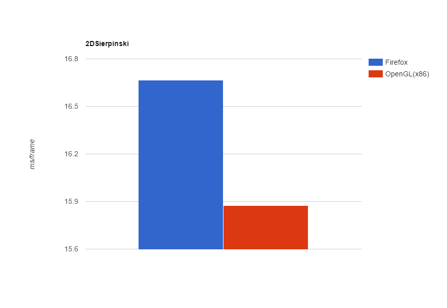
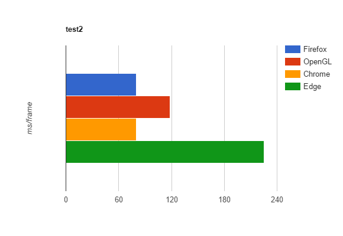
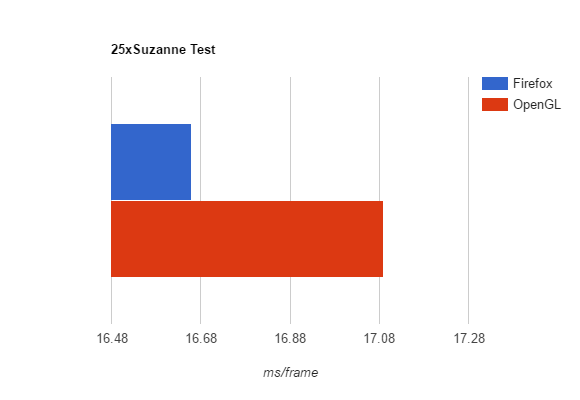
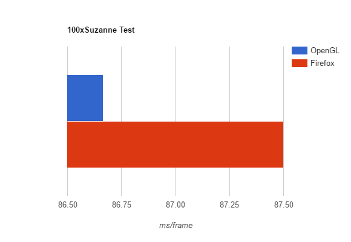

Benchmarks
To decide which one of them performs better I made two simple renderers.
The first one is written in C++,the libs I chose to use for this little renderer were GLEW and
GLFW cause they are particularly easy to learn and work with (especialy if you are new to the world of 3D graphics). The version of OpenGL I decided to use for experimentation is 2.1 mainly for three reasons:
- Its still the most currently used version of OpenGL and probably the most stable one.
- It basically runs everywhere
- The current version of WebGL that runs on our browsers uses OpenGL ES 2.0 which is a subset OpenGL 2.
index.cxx
The second renderer is written in JavaScript. The browser for testing the code is Firefox 44.0.2, seeing that is actually the fastest when it comes to WebGL. Just for the record, I will also run some tests on Chrome and Microsoft Edge.
Show/Hide Source Codeindex.js
Test No.1
For the first test I ran a 2D Sierpinski fractal shader made by Inigo Quilez. The shader is "static" (meaning the final result doesn't change over time) which gives a constant framerate (or render time per frame).
Results:
OpenGL was slightly faster than WebGL but still that doesn't mean anything. If we convert from ms/frame to frames/second (FPS) we get 63.2911 and 60.0240 fps, respectively. Both of them are near the maximum framerate we can reach with vsync enabled. Although, I could close it off by changing the swapInterval to 0 in OpenGL, to disable vsync in browser isn't that easy (tried this solution by Geek3D and I got even worse render times than before). Besides that, I don't really see the point of disabling it. I 'll just increase GPU load to get it under 60fps for now.
Show/Hide CanvasAh! I almost forgot, here's the source of the shader if you want to check it out.
Test No.2
For the second test I found a very demanding shader on GLSL Sandbox and thought it was worth a try.
Results:
Suprisingly WebGL was far too faster than OpenGL with render time of 75 ms/s. Converting the above times to FPS gives us 13.3 FPS for Chrome and Firefox, 8.7 for OpenGL 2 and Edge comes last with only 4.56 FPS.
Show/Hide CanvasAnd of course the source of the shader ....
Test No.3
It's time to use more than 2 triangles and create an actual scene with geometry. This test is focused at stressing the machine by increasing the size of the VBOs instead of flooding the fragment shader with complex calculations. The high resolution 3D model I chose to use for the test is the well known to some of you suzanne. Simple Phong shading was used for making this test possible.
Firstly, I ran a scene with 25 instances of suzanne with each suzzane constructed of 11,692 vertices, so if we sum it up we have 25 render calls per frame and 58,460 vertices in the scene ready to be rendered on the viewport without using any instancing techniques.
Converting the above times to FPS gives us values withing a range of 58 to 60 frames (vsync cap). I think its time to increase the GPU load, here is the same program with 100 instances of suzanne. Summing up to 100 render calls per frame and 1,169,200 vertices in the scene.
Suprisingly, the difference between the two APIs was less than 1ms. In detail, OpenGL gave 86.665 ms/frame and WebGL 87.5 ms/frame using Firefox. I decided to run one more test with 125 additional instances of suzanne which sums up to 225 render calls per frame and 2,630,700 vertices in the scene.

WebGL was faster than OpenGL by 42 ms/frame (0.5767 FPS). Converting the above times to FPS gives us 3.4285 for OpenGL and 4.0053 for WebGL.
Show/Hide Source Code of OpenGL rendererindex.cxx
index.js